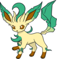

Nome: Érika
Insígnia: Arco-Íris
Cidade: Celadon
Biografia:
A cidade de Celadon é conhecida pela produção de perfumes exóticos. A família de Érika é uma das mais ricas produtoras dessas essências. Essa coincidência fez correr entre as más línguas que a líder havia sido escolhida apenas pelo poder de seus pais. Mas Érika não se importa com isso. A aparência gentil desaparece completamente quando ela e seus pokémons grama entram em um combate, o que concede ao ginásio o maior número de discúpulos do mundo, que geralmente são mulheres.
Quando criança, Érika foi atacada por um Grimer, até chegar um Gloom para salvá-la. Desde esse dia ela é amiga do Gloom. Érika só aceita treinadoras para seu ginásio. Ash e seus amigos salvaram o ginásio de um incêndio e então lutou por sua insígnea. Érika tira a essência de perfume da baba de seu Gloom.
Pokémon:
